FEEDBACK ;)
@vm_rocks
Com o levantamento da lapidação da essência no método da @kellyalbert.brand, o rebranding foi um processo criativo que fluiu lindamente, de forma muito natural. O visual entra numa esfera não só de criação, mas de tradução do que a marca já é! Grande honra e prazer em fazer parte!
@shapes.studio.br
@vm_rocks um trabalho maravilhoso! A marca está maravilhosa, Gabi! Atendeu as expectativas de uma barra extremamente alta!!! Você arrasa!!!
@kellyalbert.brand
@vm_rocks Gabi você é uma parceira e tanto!
@kellyalbert.brand
@shapes.studio.br Lariii ela arrasa mesmo! Sempre me surpreendo quando ela me mostra as ideias visuais para um projeto.